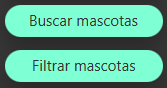
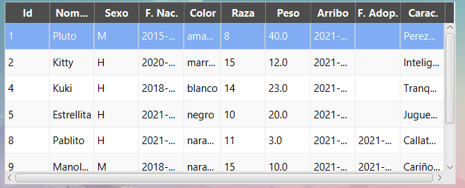
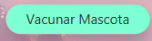
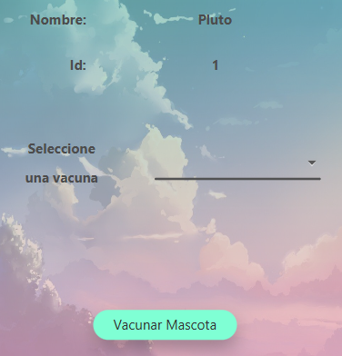

Para poder vacunar a un animal primero debes abrir el menú que se encuentra en la parte superior izquierda.

Una vez abierto, puedes escoger tanto la opción de "Filtrar mascotas" como la opción de "Buscar mascotas"
Lo pasos para vacunar a una mascota desde filtrar son exactamente los mismo que desde buscar.
Lo primero es seleccionar a la mascota a la que quieres vacunar.
Una vez seleccionada, pincha sobre el botón "Vacunar mascota".
Se te abrirá una pestaña con información sobre esa mascota. Las vacunas que podrás suministrarle dependerán del tipo de animal que sea. Así, selecciona la vacuna a suministrar y pincha sobre el botón "Vacunar mascota" para guardar en el sistema las nuevas vacunas suministradas.
